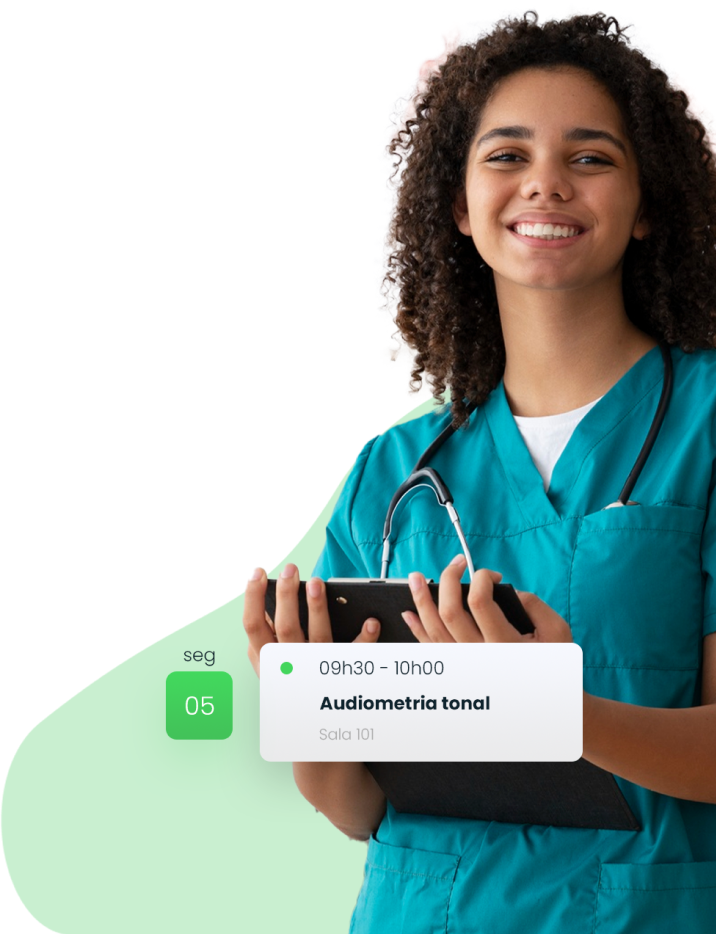
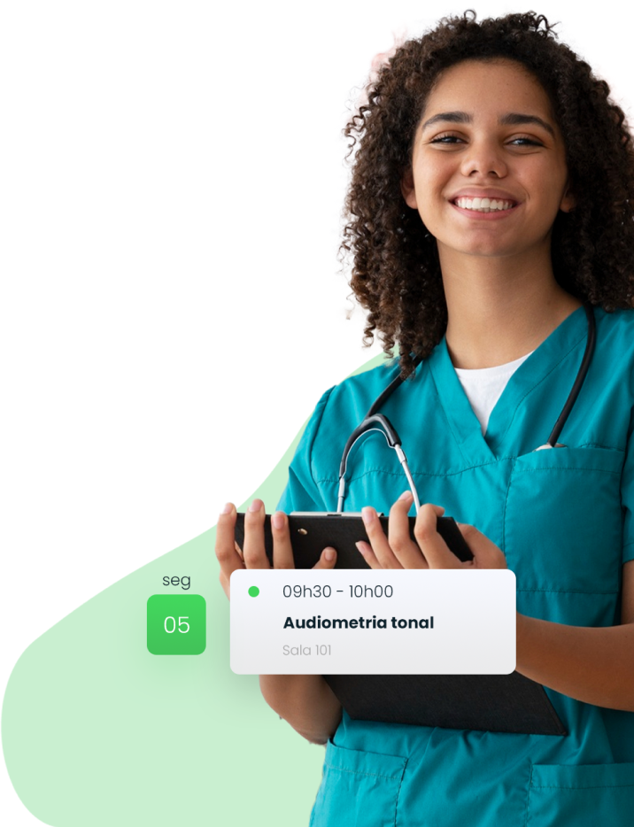

O eSocial é um sistema eletrônico do governo brasileiro que tem como objetivo unificar e simplificar o envio de informações trabalhistas, previ-denciárias e fiscais pelas empresas.
Visa prevenir o surgimento e/ou agravamento da perda auditiva induzida por níveis de pressão sonora elevados e a conservação da saúde auditiva dos trabalhadores.
É empregado na monitorização biológica de trabalhadores expostos ocupacionalmente aos solventes.
É empregado na monitorização biológica de trabalhadores expostos ocupacionalmente aos solventes.
Avalia as células sanguíneas de um paciente, ou seja, as da série branca e vermelha, contagem de plaquetas, reticulócitos e índices hematológicos. O exame é requerido pelo médico para diagnosticar ou controlar a evolução de uma doença.
Visa prevenir o surgimento e/ou agravamento de patologias pulmonares.
Padrão OIT
É empregado na monitorização biológica de trabalhadores expostos ocupacionalmente aos solventes.
Visa prevenir o surgimento de modificações de eixo da coluna, lesões ósseas e perda de cartilagem.
Para prevenção de acidentes do trabalho para atividades perigosas. Profissionais com alterações na glicemia podem apresentar diversos tipos de mal-estar, aumentando o risco de acidentes do trabalho.